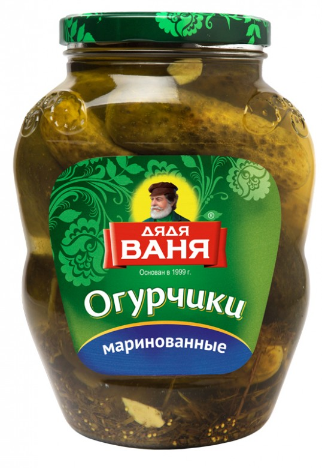
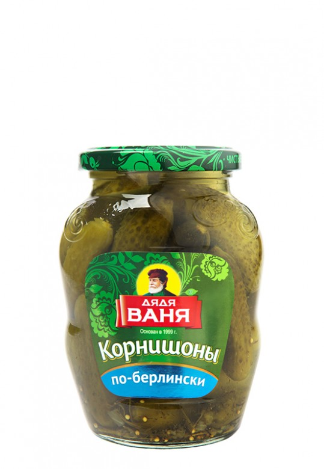
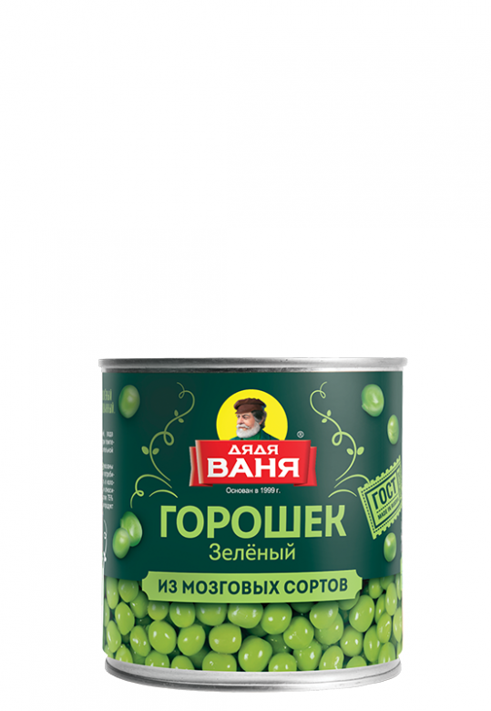
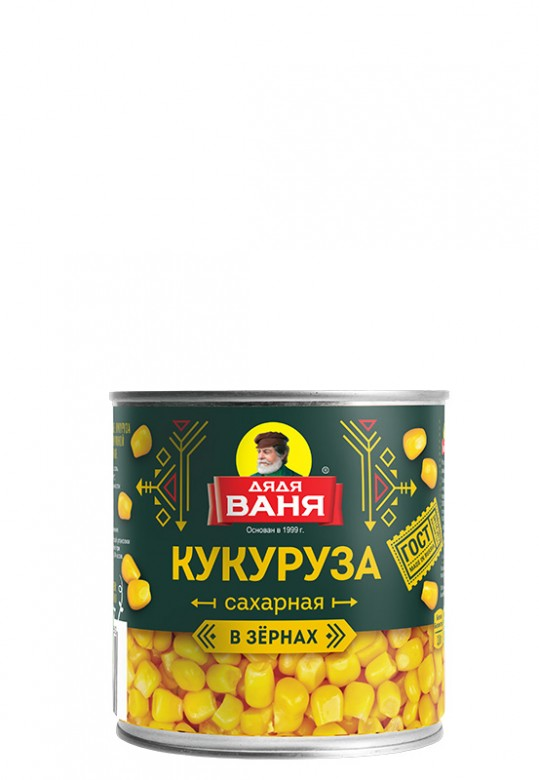
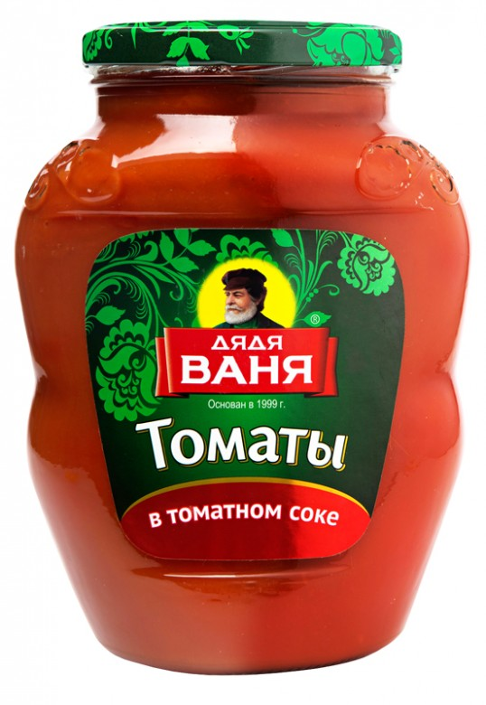
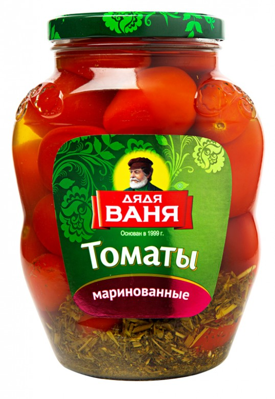

Дядя Ваня - один из крупнейших производителей консервированных овощей и соусов в России. Компания известна своим высоким качеством продукции и широким ассортиментом.
Ключевые продукты:
-
1800 мл 
Огурцы маринованные
Классический вариант маринада. Приготовлены из отборных грунтовых волгоградских огурчиков.
Вариант фасовки:
1800 мл / 6 шт
Штрихкод: 4607002991358
Условия хранения: от 0°C до +25°С пр относительной влажности воздуха не более 75%
После вскрытия: хранить в холодильнике при температуре от +2°С до +6°С не более 3-х суток
Срок хранения: 24 месяца
Состав: огурцы свежие, вода очищенная, сахар, зелень укропа, соль, регулятор кислотности - уксусная кислота ледяная, семена горчицы, чеснок
12 ккал51 кДж3.0 Углеводы -
350 г 
Корнишоны «По-берлински»
Корнишоны «по-берлински» - это то же удовольствие от фирменных гурчиков, только в мини-формате.
Вариант фасовки:
350 г
Условия хранения: хранить в сухом и прохладном месте при температуре от 0°C до +25°С и относительной влажности воздуха не более 75%
После вскрытия: хранить в холодильнике при температуре от +2°С до +6°С не более 3-х суток
Срок хранения: 36 месяцев
Состав: огурцы, очищенная вода, сахар, зелень укропа, соль, регулятор кислотности: уксусная кислота ледяная, семена горчицы, лук сушеный, перец черный горошек, лавровый лист
14 ккал60 кДж3.5 Углеводы -
400 г 
Горошек зеленый
Горошек зеленый, приготовленный по ГОСТ, из мозговых сортов. Выращивается на собственных полях в Краснодарском крае.
Вариант фасовки:
400 г
Условия хранения: от 0°С до +25°С при относительной влажности воздуха не более 75%
После вскрытия: хранить в холодильнике при температуре от +2°С до +6°С не более 1-х суток
Срок хранения: 48 месяцев
Состав: горох овощной свежий, вода очищенная, сахар, соль
35 ккал150 кДж3.0 Белки6.0 Углеводы -
340 г 
Кукуруза сладкая
Сладкая молочная кукуруза делается только из свежего сырья по мировым стандартам. Без консервантов.
Вариант фасовки:
340 г / 12 шт
Штрихкод: 4607002990160
Условия хранения: от 0°С до +25°С при относительной влажности воздуха не более 75%
После вскрытия: хранить в холодильнике при температуре (4±2)°С не более 24 часов
Срок хранения: 48 месяцев
Состав: кукуруза, вода, сахар, соль
110 ккал480 кДж3.5 Белки1.5 Жиры20.0 Углеводы -
1800 мл 
Томаты в томатном соке
Натуральный томатный сок и цельные помидоры. Подходит для любых блюд и закусок.
Вариант фасовки:
1800 мл / 6 шт
Штрихкод: 4607002999453
Условия хранения: хранить в сухом и прохладном месте при температуре от 0°C до +25°С и относительной влажности воздуха не более 75%
После вскрытия: хранить в холодильнике при температуре от +2°С до +6°С не более 1-х суток
Срок хранения: 36 месяцев
Состав: томаты свежие, томатный сок прямого отжима, сахар, соль, регулятор кислотности - уксусная кислота ледяная, возможны незначительные следы горчицы
35 ккал510 кДж30.0 Углеводы -
1800 мл 
Томаты маринованные
Спелые томаты в традиционном пряном маринаде.
Вариант фасовки:
1800 мл / 6 шт
Штрихкод: 4607002991587
Условия хранения: от 0°C до +25°С при относительной влажности воздуха не более 75%
После вскрытия: хранить в холодильнике при температуре от +2°С до +6°С не более 1-х суток
Срок хранения: 36 месяцев
Состав: томаты свежие, вода очищенная, сахар, зелень укропа, соль, регулятор кислотности - уксусная кислота ледяная, чеснок сушеный, перец черный горошек, лавровый лист
20 ккал85 кДж5.0 Углеводы
Партнер Afzuni с 2018 года